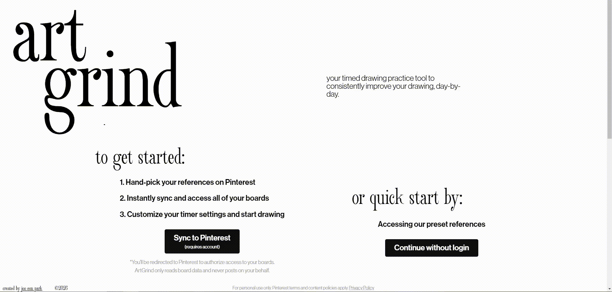

Original Interface
WikiartRef is a web application that allows users to query categories from the wikimedia commons to be randomly selected and displayed in timed intervals. The user then draws the images within the alloted time as a means to practice their drawing skills.
Original interface URLForm Locations
The category selection button is the second button down in the "category selection section." It is located on the left side of the form fields.
The start session button is the largest button of all the form fields. It is located at the bottom of all the buttons and is the largest button on the screen.
Triggers
Category Selection Triggers
Hover on:
Hover off:
Click on:
Click off:
Start Session Triggers
Hover on:
Hover off:
Click on:
Category Selection Rules
Hover
On
- Changes background fill from #ffffff to #000000 over 400ms using an ease in and ease out transition.
- Changes text and chevron from #000000 to #ffffff over 400 ms using an ease in and ease out transition.
- While dropdown menu is open, changes selected dropdown menu text from #ffffff to #969BFF.
Off
- Changes background fill from #000000 to #ffffff over 400ms using an ease in and ease out transition.
- Changes text and chevron from #ffffff to #000000 over 400 ms using an ease in and ease out transition.
- While dropdown menu is open, changes unselected dropdown menu text from #969BFF to #ffffff.
Click
On
- Clicking the initial dropdown menu button opens a dropdown menu with a selection of options for different image categories. This happens instantaneously and covers the content below it.
- Clicking an option in the opened dropdown menu changes the content filter for the image search algorithm.
- Opening the dropdown menu plays an animation that rotates the chevron 180 degrees over 400ms. It initially points up and then points down after the animation plays.
Off
- Opening the dropdown menu plays an animation that rotates the chevron 180 degrees over 400ms. It initially points up and points down after the animation plays.
- Clicking a menu option closes the dropdown menu.
Start Session Rules
Hover
On
- Hovering over the start session button slowly fills the background color from #ffffff to #7675A0 in a gradient from left to right.
- The text that is in front of the #7675A0 background turns from #000000 to #ffffff.
Off
- The background fill reverses its gradient from right to left.
- The text that is in front of the #ffffff background turns from #ffffff to #000000 as the background color changes behind it.
Click
On
- Holding click on the start session button transforms the scale by .8
- Releasing the click on the start session changes the scale from .8 back to 1.
- When click is completed, the page changes from the dashboard to the image display page.
Category Selection Feedback
Visual
Hover
On
- Changes background fill from #ffffff to #000000 over 400ms using an ease in and ease out transition.
- Changes text and chevron from #000000 to #ffffff over 400 ms using an ease in and ease out transition.
- While dropdown menu is open, changes selected dropdown menu text from #ffffff to #969BFF.
Off
- Changes background fill from #000000 to #ffffff over 400ms using an ease in and ease out transition.
- Changes text and chevron from #ffffff to #000000 over 400 ms using an ease in and ease out transition.
- While dropdown menu is open, changes unselected dropdown menu text from #969BFF to #ffffff.
Click
On
- Clicking the initial dropdown menu button opens a dropdown menu with a selection of options for different image categories. This happens instantaneously and covers the content below it.
- Opening the dropdown menu plays an animation that rotates the chevron 180 degrees over 400ms. It initially points up and then points down after the animation plays.
Off
- Opening the dropdown menu plays an animation that rotates the chevron 180 degrees over 400ms. It initially points up and points down after the animation plays.
- Clicking a menu option closes the dropdown menu.
Start Session Feedback
Visual
Hover
On
- Hovering over the start session button slowly fills the background color from #ffffff to #7675A0 in a gradient from left to right.
- The text that is in front of the #7675A0 background turns from #000000 to #ffffff.
Off
- The background fill reverses its gradient from right to left.
- The text that is in front of the #ffffff background turns from #ffffff to #000000 as the background color changes behind it.
Click
On
- Holding click on the start session button transforms the scale by .8
- Releasing the click on the start session changes the scale from .8 back to 1.
Loops & Modes
Loops
There are no loops present in the microinteraction
Modes
There are no modes present in the microinteraction.
Assets

Visualization
Static images showing each state of the existing microinteraction.
-
Initial state: all chime buttons rest in light grey with empty checkboxes.

-
Initial hover: the hovered button darkens from #efefef to #DDDDDD.

-
Initial click animation: the button squishes toward a .84 scale as it is pressed.

-
Active state: the selected button turns black with white text and a filled checkbox.

-
Active hover: hovering the selected button lowers its opacity to 80%.

-
Active click animation: the button squishes again as it is clicked off.